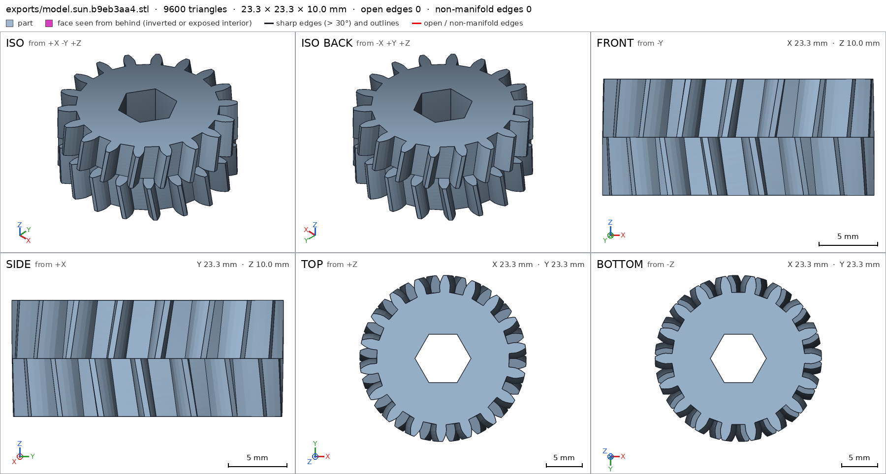
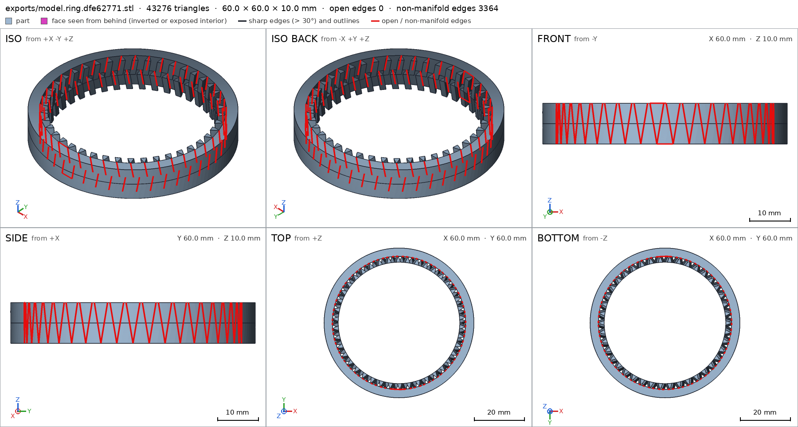
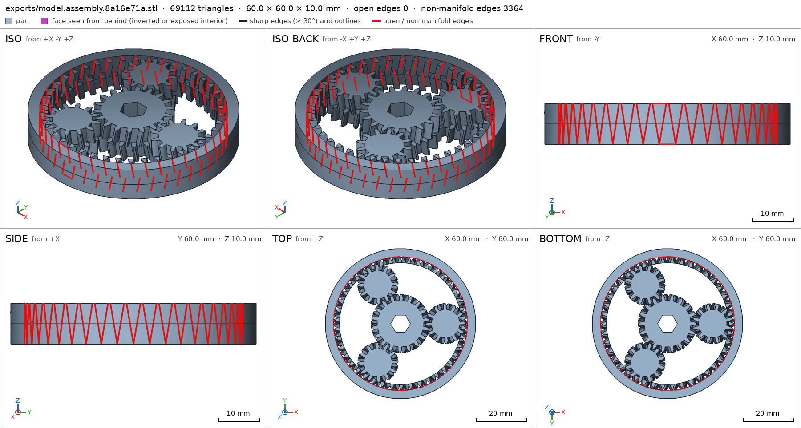
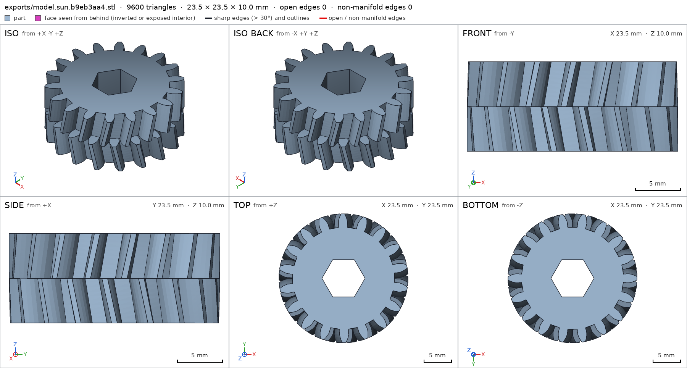
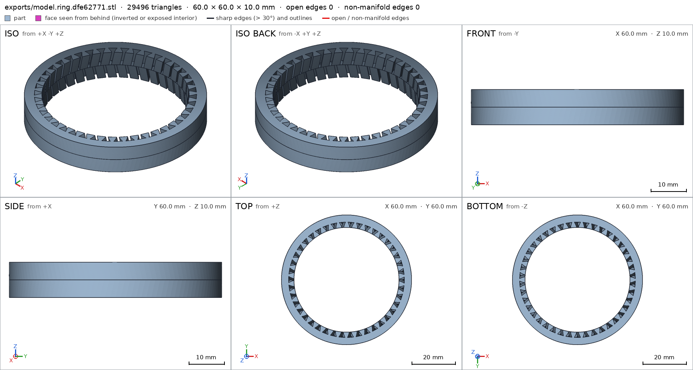
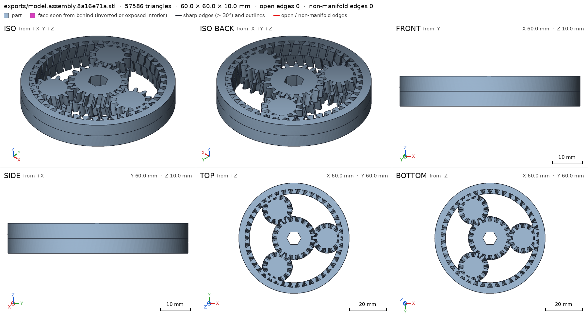
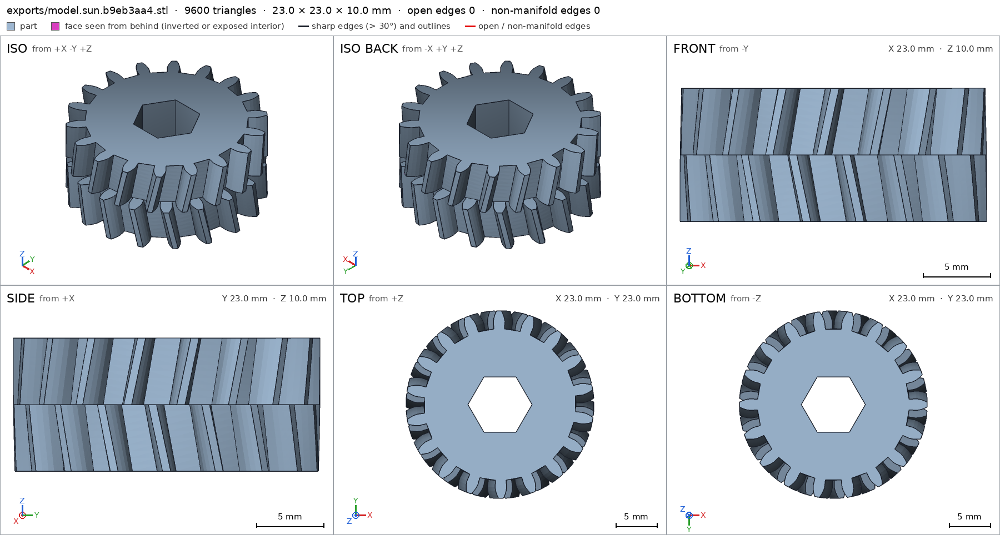
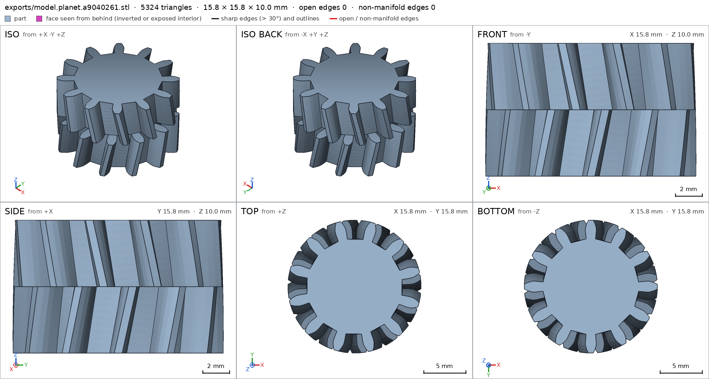
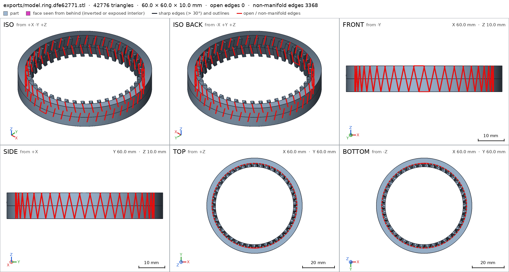

Planetary gear set printed in place
Request
A planetary gear set that prints as one piece and turns right off the bed: a sun gear in the middle, three planet gears around it, and a ring gear outside.
- About 60 mm across and 10 mm thick.
- Straight or herringbone teeth, your call, as long as the gears stay captive (they must not fall out of the ring) and everything prints without supports.
- Clearances that work in PLA on a Bambu Lab A1 with a 0.4 mm nozzle, so nothing fuses.
- A hex hole in the sun gear for a 1/4 inch bit, to drive it.
Show me the gear set as the assembly, and the sun gear turning, with the planets, as its motion.
Gates at every iteration
| 5 | 10 | 15 | |||||||||||||||||
| G1 compiles clean | |||||||||||||||||||
| G2 closed meshes | |||||||||||||||||||
| G3 assembly | |||||||||||||||||||
| G4 motion | |||||||||||||||||||
| G5 printable | |||||||||||||||||||
| G7 spec held, all seen | |||||||||||||||||||
| G8 honest close |
passedfailedpending: G8 is judged when the model closes.nothing verified: response cut short or failed. One column per iteration; each cell links to it.
Session
- Iteration 1USD 0.011 · 423 s · 50,669 output tokens
Your planetary set is on the bench — herringbone captive gears are next.
scad_writemodel.scad: 183 lines
- Iteration 2USD 0.000 · 12 s · 535 output tokens
Closing in on your captive set — exporting and verifying everything now.
scad_exportok=True, watertight=True, bodies=1, bounds=[[-12.0, -12.0, 0.0], [12.0, 12.0, 10.0]], spec ok, sheet renders/sheet-002.pngscad_exportok=True, watertight=True, bodies=1, bounds=[[-8.4, -8.4, 0.0], [8.4, 8.4, 10.0]], spec ok, sheet renders/sheet-003.pngscad_exportok=True, watertight=True, bodies=1, bounds=[[-30.0, -30.0, 0.0], [30.0, 30.0, 10.0]], spec FAILS, sheet renders/sheet-004.pngscad_exportok=True, watertight=True, bodies=1, bounds=[[-30.0, -30.0, 0.0], [30.0, 30.0, 10.0]], spec ok, sheet renders/sheet-005.pnginterference_check5 instances, 3 overlaps, G3 3 problems, G4 6, G5 29, 56.86 s- G3planet1 and ring overlap 4.857 mm³, 0.112 mm thick on average, in [[23.272, -5.868, 0.0], [26.364, 5.189, 10.0]]
- G3planet2 and ring overlap 4.857 mm³, 0.11 mm thick on average, in [[-16.446, 17.707, 0.0], [-6.554, 23.89, 10.0]]
- G3planet3 and ring overlap 4.857 mm³, 0.112 mm thick on average, in [[-16.718, -23.438, 0.0], [-7.234, -17.22, 10.0]]
- G4assembly_order, step 3: planet1 goes 0.908 mm deep into sun at -4.25 mm, deeper than the 0.9 mm of its flex
- G4assembly_order, step 3: planet1 and ring never overlap as it comes in, so nothing snaps: a flex is a feature that rides over what it presses on. Make it meet that, or leave it out
- G4assembly_order, step 4: planet2 goes 0.909 mm deep into sun at -4.25 mm, deeper than the 0.9 mm of its flex
- and 32 more
- Iteration 3USD 0.004 · 58 s · 6,616 output tokens
I see fusing risks and spec mismatches — fixing clearances and captive details now.
scad_writemodel.scad: 187 lines
- Iteration 4USD 0.002 · 12 s · 317 output tokens
Corrected file is ready — now exporting each gear and checking the full assembly.
scad_exportok=True, watertight=True, bodies=1, bounds=[[-11.8, -11.8, 0.0], [11.8, 11.8, 10.0]], spec ok, sheet renders/sheet-008.pngscad_exportok=True, watertight=True, bodies=1, bounds=[[-8.2, -8.2, 0.0], [8.2, 8.2, 10.0]], spec ok, sheet renders/sheet-009.pngscad_exportok=True, watertight=True, bodies=1, bounds=[[-30.0, -30.0, 0.0], [30.0, 30.0, 10.0]], spec ok, sheet renders/sheet-010.pngscad_exportok=True, watertight=True, bodies=1, bounds=[[-30.0, -30.0, 0.0], [30.0, 30.0, 10.0]], spec ok, sheet renders/sheet-011.png
- Iteration 5USD 0.002 · 11 s · 323 output tokens
Individual gears check out — now verifying the assembled motion and support-free print.
interference_check5 instances, 0 overlaps, G3 0 problems, G4 3, G5 32, 70.45 s- G4assembly_order, step 3: planet1 does not go in moving along [0, 0, -1]: it hits ring on 9.21 mm² of its shadow (zone [[23.525, -5.875, 5.37], [26.075, 5.925, 10.0]]); it goes in along no axis direction
- G4assembly_order, step 4: planet2 does not go in moving along [0, 0, -1]: it hits ring on 9.1 mm² of its shadow (zone [[-16.925, 17.413, 5.302], [-6.675, 23.663, 10.0]]); it goes in along no axis direction
- G4assembly_order, step 5: planet3 does not go in moving along [0, 0, -1]: it hits ring on 9.14 mm² of its shadow (zone [[-16.875, -23.664, 5.379], [-6.625, -17.464, 10.0]]); it goes in along no axis direction
- G5printed in place: sun and planet1 are 0.0 mm apart: printed in place they fuse (print_in_place asks for 0.2 mm or more)
- G5printed in place: sun and planet2 are 0.0 mm apart: printed in place they fuse (print_in_place asks for 0.2 mm or more)
- G5printed in place: sun and planet3 are 0.0 mm apart: printed in place they fuse (print_in_place asks for 0.2 mm or more)
- and 29 more
printability_reportzones=18, undeclared=0, fits the bed=Trueprintability_reportzones=12, undeclared=0, fits the bed=Trueprintability_reportzones=254, undeclared=100, fits the bed=True
- Iteration 6USD 0.004 · 90 s · 8,281 output tokens
scad_writemodel.scad: 173 lines
- Iteration 7USD 0.005 · 9 s · 280 output tokens
Clearances are opened up — checking gaps, captive fits and printability.
scad_exportok=True, watertight=True, bodies=1, bounds=[[-11.65, -11.65, 0.0], [11.65, 11.65, 10.0]], spec ok, sheet renders/sheet-017.pngscad_exportok=True, watertight=True, bodies=1, bounds=[[-8.05, -8.05, 0.0], [8.05, 8.05, 10.0]], spec ok, sheet renders/sheet-018.pngscad_exportok=True, watertight=False, bodies=2, bounds=[[-30.0, -30.0, 0.0], [30.0, 30.0, 10.0]], spec FAILS, sheet renders/sheet-019.pngscad_exportok=True, watertight=False, bodies=2, bounds=[[-30.0, -30.0, 0.0], [30.0, 30.0, 10.0]], spec ok, sheet renders/sheet-020.png

scad_export, call 17 scad_export, call 18 
scad_export, call 19 
scad_export, call 20 - Iteration 8USD 0.006 · 39 s · 2,269 output tokens
The ring shows non-manifold edges from its mid-plane joint — patching that now.
scad_patchmodel.scad line 93: 174 lines
- Iteration 9USD 0.005 · 24 s · 1,179 output tokens
Fix applied to the ring joint — re-exporting all parts to confirm watertight meshes.
scad_exportok=True, watertight=True, bodies=1, bounds=[[-11.65, -11.65, 0.0], [11.65, 11.65, 10.0]], spec okscad_exportok=True, watertight=True, bodies=1, bounds=[[-8.05, -8.05, 0.0], [8.05, 8.05, 10.0]], spec okscad_exportok=True, watertight=False, bodies=1, bounds=[[-30.0, -30.0, 0.0], [30.0, 30.0, 10.0]], spec ok, sheet renders/sheet-024.pngscad_exportok=True, watertight=False, bodies=1, bounds=[[-30.0, -30.0, 0.0], [30.0, 30.0, 10.0]], spec ok, sheet renders/sheet-025.png
- Iteration 10USD 0.002 · 59 s · 5,669 output tokens
scad_writemodel.scad: 171 lines
- Iteration 11USD 0.001 · 20 s · 763 output tokens
Reverted the ring to its watertight form — exporting all parts for final checks.
scad_exportok=False, watertight=None, bodies=None, bounds=None, no specscad_exportok=False, watertight=None, bodies=None, bounds=None, no specscad_exportok=False, watertight=None, bodies=None, bounds=None, no specscad_exportok=False, watertight=None, bodies=None, bounds=None, no spec
- Iteration 12USD 0.009 · 8 s · 250 output tokens
Syntax error on that edit — fixing it now.
scad_patchmodel.scad line 53: 171 lines
- Iteration 13USD 0.006 · 10 s · 284 output tokens
Typo fixed — re-exporting everything.
scad_exportok=True, watertight=True, bodies=1, bounds=[[-11.75, -11.75, 0.0], [11.75, 11.75, 10.0]], spec ok, sheet renders/sheet-032.pngscad_exportok=True, watertight=True, bodies=1, bounds=[[-8.15, -8.15, 0.0], [8.15, 8.15, 10.0]], spec ok, sheet renders/sheet-033.pngscad_exportok=True, watertight=True, bodies=1, bounds=[[-30.0, -30.0, 0.0], [30.0, 30.0, 10.0]], spec ok, sheet renders/sheet-034.pngscad_exportok=True, watertight=True, bodies=1, bounds=[[-30.0, -30.0, 0.0], [30.0, 30.0, 10.0]], spec ok, sheet renders/sheet-035.png

scad_export, call 32 scad_export, call 33 
scad_export, call 34 
scad_export, call 35 - Iteration 14USD 0.002 · 11 s · 243 output tokens
Watertight gears confirmed — running final interference and printability verification.
interference_check5 instances, 3 overlaps, G3 3 problems, G4 1, G5 3, 53.35 s- G3planet1 and ring overlap 8.472 mm³, 0.144 mm thick on average, in [[23.48, -5.961, 0.0], [25.706, 6.033, 10.0]]
- G3planet2 and ring overlap 8.472 mm³, 0.143 mm thick on average, in [[-16.964, 17.318, 0.0], [-6.603, 23.637, 10.0]]
- G3planet3 and ring overlap 8.472 mm³, 0.143 mm thick on average, in [[-16.941, -23.707, 0.0], [-6.515, -17.381, 10.0]]
- G4the assembly order is missing (assembly_order in the assembly's spec): every instance, in order, with the direction it moves along as it comes in
- G5printed in place: sun and planet1 are 0.0 mm apart: printed in place they fuse (print_in_place asks for 0.2 mm or more)
- G5printed in place: sun and planet2 are 0.0 mm apart: printed in place they fuse (print_in_place asks for 0.2 mm or more)
- and 1 more
printability_reportzones=18, undeclared=0, fits the bed=Trueprintability_reportzones=12, undeclared=0, fits the bed=Trueprintability_reportzones=254, undeclared=0, fits the bed=True
- Iteration 15USD 0.004 · 111 s · 10,529 output tokens
scad_writemodel.scad: 186 lines
- Iteration 16USD 0.001 · 21 s · 1,572 output tokens
Final clearance fix in progress — repairing the file to close cleanly.
scad_patchmodel.scad line 54: 173 lines
- Iteration 17USD 0.008 · 22 s · 1,109 output tokens
Final geometry ready — exporting all parts to verify before closing.
scad_exportok=True, watertight=True, bodies=1, bounds=[[-11.5, -11.5, 0.0], [11.5, 11.5, 10.0]], spec ok, sheet renders/sheet-042.pngscad_exportok=True, watertight=True, bodies=1, bounds=[[-7.9, -7.9, 0.0], [7.9, 7.9, 10.0]], spec ok, sheet renders/sheet-043.pngscad_exportok=True, watertight=False, bodies=85, bounds=[[-30.0, -30.0, 0.0], [30.0, 30.0, 10.0]], spec FAILS, sheet renders/sheet-044.pngscad_exportok=True, watertight=False, bodies=68, bounds=[[-30.0, -30.0, 0.0], [30.0, 30.0, 10.0]], spec ok, sheet renders/sheet-045.png

scad_export, call 42 
scad_export, call 43 
scad_export, call 44 scad_export, call 45 - Iteration 18USD 0.003 · 59 s · 6,049 output tokens
scad_writemodel.scad: 173 lines
- Iteration 19USD 0.000 · 3 s · 0 output tokens


Final verification
Source
model.scad
// Planetary gear set printed in place - herringbone, captive, no supports
// About 60mm across, 10mm thick. Sun + 3 planets + ring.
// Hex hole in sun for 1/4 inch bit.
/* [Parts] */
part = "assembly"; // [assembly,sun,planet,ring]
cadverify_only = "";
module instance(name, part, unit = 1) {
echo(cadverify_instance = [name, part, unit]);
if (cadverify_only == "" || cadverify_only == name) children();
}
m = 1.2;
pa_deg = 20;
Zs = 18;
Zp = 12;
Zr = 42;
thick = 10;
half_h = 5;
dx_apex = 1.0;
backlash_t = 0.4;
tip_cut = 0.6;
flank_steps = 5;
p_circ = PI*m;
thick_ext = p_circ/2 - 2*backlash_t;
thick_ring = p_circ/2 + 2*backlash_t;
Rp_sun = m*Zs/2;
Rb_sun = Rp_sun*cos(pa_deg);
Rt_sun = Rp_sun + m - tip_cut;
Rr_sun = Rp_sun - 1.25*m;
Rp_planet = m*Zp/2;
Rb_planet = Rp_planet*cos(pa_deg);
Rt_planet = Rp_planet + m - tip_cut;
Rr_planet = Rp_planet - 1.25*m;
Rp_ring = m*Zr/2;
Rb_ring = Rp_ring*cos(pa_deg);
Rt_ring = Rp_ring - m + tip_cut;
Rr_ring = Rp_ring + 1.25*m;
tw_sun = dx_apex/Rp_sun*180/PI;
tw_planet = dx_apex/Rp_planet*180/PI;
tw_ring = dx_apex/Rp_ring*180/PI;
Dcenter = Rp_sun + Rp_planet;
Rhex = 6.8/sqrt(3);
function inv_rad(a_deg) = tan(a_deg) - a_deg*PI/180;
function half_at_rad(R, Rp, Rb, half0, inv_pa) = half0 + inv_pa - (R >= Rb ? inv_rad(acos(Rb/R)) : 0);
function gear_outline2(Z, Rp, Rb, Rt, Rr, tooth_th, flank) =
let(half0 = (tooth_th/Rp)/2,
inv_pa = inv_rad(pa_deg),
pitch = 360/Z)
[for(i=[0:Z-1]) for(pt =
concat(
[for(j=[0:flank]) let(R = Rr+(Rt-Rr)*j/flank, hr = half_at_rad(R,Rp,Rb,half0,inv_pa), ang = i*pitch - hr*180/PI) [R*cos(ang), R*sin(ang)]],
let(hrtip = half_at_rad(Rt,Rp,Rb,half0,inv_pa)) [[Rt*cos(i*pitch + hrtip*180/PI), Rt*sin(i*pitch + hrtip*180/PI)]],
[for(j=[flank-1:-1:0]) let(R = Rr+(Rt-Rr)*j/flank, hr = half_at_rad(R,Rp,Rb,half0,inv_pa), ang = i*pitch + hr*180/PI) [R*cos(ang), R*sin(ang)]]
)) pt
];
function hex_pts() = [for(k=[0:5]) let(a=k*60) [Rhex*cos(a), Rhex*sin(a)]];
module sun_gear() {
difference() {
union() {
linear_extrude(height=half_h, twist=tw_sun, slices=10, convexity=10)
polygon(gear_outline2(Zs, Rp_sun, Rb_sun, Rt_sun, Rr_sun, thick_ext, flank_steps));
translate([0,0,half_h]) rotate([0,0,tw_sun])
linear_extrude(height=half_h, twist=-tw_sun, slices=10, convexity=10)
polygon(gear_outline2(Zs, Rp_sun, Rb_sun, Rt_sun, Rr_sun, thick_ext, flank_steps));
}
translate([0,0,-0.5]) linear_extrude(height=thick+1) polygon(hex_pts());
}
}
module planet_gear() {
union() {
linear_extrude(height=half_h, twist=-tw_planet, slices=10, convexity=10)
polygon(gear_outline2(Zp, Rp_planet, Rb_planet, Rt_planet, Rr_planet, thick_ext, flank_steps));
translate([0,0,half_h]) rotate([0,0,-tw_planet])
linear_extrude(height=half_h, twist=tw_planet, slices=10, convexity=10)
polygon(gear_outline2(Zp, Rp_planet, Rb_planet, Rt_planet, Rr_planet, thick_ext, flank_steps));
}
}
module ring_gear() {
linear_extrude(height=half_h, twist=-tw_ring, slices=10, convexity=10)
difference() {
circle(r=30, $fn=128);
polygon(gear_outline2(Zr, Rp_ring, Rb_ring, Rt_ring, Rr_ring, thick_ring, flank_steps));
}
translate([0,0,half_h]) rotate([0,0,-tw_ring])
linear_extrude(height=half_h, twist=tw_ring, slices=10, convexity=10)
difference() {
circle(r=30, $fn=128);
polygon(gear_outline2(Zr, Rp_ring, Rb_ring, Rt_ring, Rr_ring, thick_ring, flank_steps));
}
}
if (part == "sun") {
echo(cadverify_spec = [
["bounds", [[-11.4, -11.4, 0], [11.4, 11.4, 10]]],
["bodies", 1],
["through_holes", 1],
["overhangs_allowed", [["herringbone apex valleys, bridges under 3 mm", [[-11.4, -11.4, 4.4], [11.4, 11.4, 5.6]]]]],
["copies", 1],
["details", [
["sun_body", "material", [[4.5, -1, 0], [8.5, 1, 10]], 0.95],
["hex_empty", "void", [[-2, -2, -1], [2, 2, 11]], 0.95],
["sun_thickness", "thickness", [6, 0, -1], [0, 0, 1], 10],
["herringbone", "view", [[-11.4, -11.4, 4], [11.4, 11.4, 6]]]
]]
]);
sun_gear();
} else if (part == "planet") {
echo(cadverify_spec = [
["bounds", [[-7.8, -7.8, 0], [7.8, 7.8, 10]]],
["bodies", 1],
["through_holes", 0],
["overhangs_allowed", [["herringbone apex valleys, bridges under 3 mm", [[-7.8, -7.8, 4.4], [7.8, 7.8, 5.6]]]]],
["copies", 3],
["details", [
["planet_body", "material", [[2.5, -0.8, 0], [4.5, 0.8, 10]], 0.95],
["planet_thickness", "thickness", [3.5, 0, -1], [0, 0, 1], 10],
["herringbone", "view", [[-7.8, -7.8, 4], [7.8, 7.8, 6]]]
]]
]);
planet_gear();
} else if (part == "ring") {
echo(cadverify_spec = [
["bounds", [[-30, -30, 0], [30, 30, 10]]],
["bodies", 1],
["overhangs_allowed", [["herringbone apex valleys, bridges under 3 mm", [[-30, -30, 4.4], [30, 30, 5.6]]]]],
["copies", 1],
["details", [
["rim_body", "material", [[27, -1, 0], [29.5, 1, 10]], 0.95],
["center_empty", "void", [[-10, -10, -1], [10, 10, 11]], 0.95],
["rim_thickness", "thickness", [28, 0, -1], [0, 0, 1], 10],
["herringbone", "view", [[-26, -26, 4], [26, 26, 6]]]
]]
]);
ring_gear();
} else if (part == "assembly") {
echo(cadverify_spec = [
["bounds", [[-30, -30, 0], [30, 30, 10]]],
["overhangs_allowed", [["herringbone apex valleys, bridges under 3 mm", [[-30, -30, 4.4], [30, 30, 5.6]]]]],
["motions", [
["sun_turn", ["sun"], "rotate", [0, 0, 0], [0, 0, 1], [0, 360],
["drives", [
[[ "planet1" ], "rotate", [18, 0, 0], [0, 0, 1], -1.5],
[[ "planet2" ], "rotate", [-9, 15.5885, 0], [0, 0, 1], -1.5],
[[ "planet3" ], "rotate", [-9, -15.5885, 0], [0, 0, 1], -1.5],
[[ "ring" ], "rotate", [0, 0, 0], [0, 0, 1], -0.428571]
]]
]
]],
["assembly_order", [
[["sun", "planet1", "planet2", "planet3", "ring"], [0, 0, 0]]
]],
["print_in_place", 0.2],
["held", ["sun", "planet1", "planet2", "planet3", "ring"]]
]);
instance("sun", "sun") sun_gear();
instance("planet1", "planet") translate([18, 0, 0]) rotate([0, 0, 15]) planet_gear();
instance("planet2", "planet") translate([-9, 15.5885, 0]) rotate([0, 0, 15]) planet_gear();
instance("planet3", "planet") translate([-9, -15.5885, 0]) rotate([0, 0, 15]) planet_gear();
instance("ring", "ring") ring_gear();
}